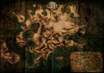
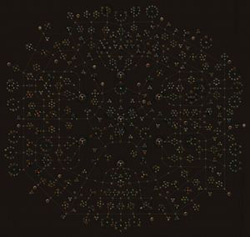

The World of Wraeclast
 The general story of the game is split into two parts, each containing five acts. You progress by leveling your character and developing your skills. You will also be completing a series of quests that will earn you skill points, as well as some valuable items. To make exploration easier, the developers have implemented waypoints (or checkpoints) throughout the map -- although searching for them can be quite tedious. Sounds like a normal ARPG, right? Well...these aspects of the game is not what makes it unique and addictive.
Skill Gems


One of the best parts about playing ARPGs is getting to experiment through a vast pool of deadly skills. Path of Exile takes that to the next level. With over 300 different skill gems, players can choose multiple skills to level up and turn their characters into the ultimate hack-n-slash killer. To those who are particularly indecisive (like myself), fear not! Path of Exile’s replayability is what makes the experimenting so easy. Simply start a new character and explore different active skill gems. Items and equipment in the game contain gem sockets that can be linked to each other. The links allow applications of support gems, which essentially add buffs to the active skill gems. Although it might require some farming to acquire items with desired gem socket combinations, there is in-game currency, such as Jeweller’s Orbs and Orbs of Fusing that allow players to re-orient and recolor gem sockets -- I do not recommend wasting too much of them on pre-endgame equipment.
Passive Skill Tree
 A character’s build is not only dependent on the skill gems slotted within armor and weapons -- the passive skill tree is the main infrastructure of a character build. Each time you level, you gain a passive skill point that is to be spent on passive skills that may drastically affect your gameplay. A weak tree is certainly to be followed by many...MANY deaths (I speak from experience). Some people prefer to explore the tree themselves and create their own build. Those who would rather create a strong and effective build the first time around can go to PoE forums where people share their builds for others to refer to. You can head over to the Builds page to look through a few of my personal favorite builds; links to more detailed instructions are provided.